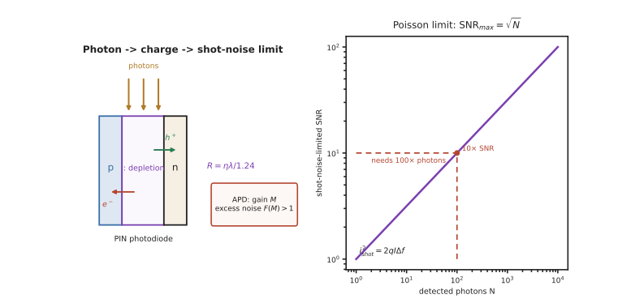

本页目录
探测 I · 光电探测器与噪声
层次：本科核心 + 业界关键 ｜ 这一页给出本课最根本的物理极限。 探测的极限不是"电路做得不够好"，而是光子到达本身的随机性。理解这一点，才能判断一个光学系统"还有多少提升空间"——这是光电工程师最重要的判断力之一。
学习层：当噪声来自光子本身，继续拧电路旋钮有用吗？
1. 具体谜题：为什么十倍 SNR 要一百倍光子？
一次曝光收集 \(N=10{,}000\) 个光子。先预测散粒噪声的 RMS 是 \(100\) 还是 \(10{,}000\)，以及把目标 SNR 从 100 提到 1000 时需要把光子数加到多少。再取一个 PIN 探测器：\(I_{ph}=1\,\mu\mathrm A\)、带宽 \(\Delta f=100\,\mathrm{kHz}\)，计算 \(\sqrt{2qI_{ph}\Delta f}\)；这项噪声能否靠换一个更安静的电阻彻底消失？
2. 先预测：增益是不是越大越灵敏？
先写下四项预测：① \(N\) 增加 4 倍时散粒受限 SNR 增加几倍；② 同样光功率下，\(\lambda\) 从 \(0.8\) μm 变为 \(1.6\) μm，响应度 \(R=\eta\lambda/1.24\) 如何变化；③ APD 的倍增 \(M=10\) 是否把 SNR 无条件提高 10 倍；④ 无光时暗电流翻倍会不会改变光子散粒噪声本身。实验先区分光子、暗电流、热和读出四条噪声链。
3. 最小 mental model：计数的均值与方差同源
把入射光子看成泊松计数：单位时间的平均计数决定信号，方差等于均值。光电转换把计数映射为电荷/电流，电子学再加入热噪声、暗电流和读出噪声。APD 先放大信号，但雪崩路径也有随机性；放大只有在它发生于主要噪声注入之前才可能改善系统 SNR。
4. 正式机制：响应度、散粒极限与 APD 过剩噪声
量子效率为 \(\eta\) 时
散粒噪声电流方差为
若只剩 \(N\) 个光子的泊松涨落，\(\mathrm{SNR}_{max}=N/\sqrt N=\sqrt N\)。APD 的简化账本为
其中 \(F(M)\ge1\) 描述倍增随机性；总方差要把独立来源相加。NEP、\(D^*\)、响应时间和动态范围是不同维度，不能只用一个“增益”排序。
5. 静态实验：从光子数读到噪声预算
无 JavaScript 时的静态读法：散粒受限时，\(N=10{,}000\) 给 \(\sigma_N=\sqrt N=100\)、SNR=100；要 SNR=1000 必须有 \(N=10^6\)。对 \(q=1.602\times10^{-19}\,\mathrm C\)、\(I=1\,\mu\mathrm A\)、\(\Delta f=100\,\mathrm{kHz}\)，
若 \(\eta=0.80\)、\(\lambda=1.55\,\mu\mathrm m\)，响应度约 \(R=1.00\,\mathrm{A/W}\)；若加入 \(M=10\)、\(F=3\)，信号幅度乘 10，但 shot-noise RMS 乘 \(10\sqrt3\)，并非无代价的十倍 SNR。脚本的计数账本默认曝光时间 \(t_{\rm exp}=1\,\mathrm{ms}\)，并把 APD 的简化 \(F(M)\) 从 \(F(1)=1\) 线性延到 \(F(10)=3\)；改变曝光时间只影响计数换算出的电流域 shot-noise 指标，不能把它与固定光子数的泊松 SNR 混为一谈。脚本可切换光子数、波长、量子效率、带宽、PIN/APD/SPAD，显示泊松散点、噪声分量柱和 SNR 账本；先预测哪一项主导，再揭示。
6. 反例与边界：灵敏度、增益和极限不是同一个词
- 散粒噪声不能由电子学“修掉”。当它已占主导，增加曝光、孔径或量子效率比换更低读出噪声更有效；暗光下则要先处理暗电流与读出噪声。
- APD 增益会带来过剩噪声和高压温漂。它可能把信号抬过后端热噪声，也可能在过高 \(M\) 时失去收益，最佳点取决于完整预算。
- 响应度随波长增加不等于探测更好。截止波长、带宽、暗电流、饱和与 NEP 仍受材料和结构限制；1550 nm 要用 InGaAs/Ge 一类合适材料。
- 光子计数也有边界。死时间、后脉冲、暗计数和时间门控会破坏简单泊松模型；相干探测虽然恢复相位，却增加本振、匹配和稳定性要求。
7. 迁移题：为弱光测量写一张噪声预算
为天文长曝光、1550 nm 光通信接收和远距 LiDAR 各选 PIN、APD、PMT 或 SPAD 中的一种。列出信号定义、带宽、暗电流、读出噪声和可接受的 SNR，并说明在散粒受限、热噪声受限、还是计数死时间受限时，下一笔工程预算应该投向哪里。

一、探测的基本机制
光子 → 电子。主要器件：
| 器件 | 机制 | 特点 |
|---|---|---|
| 光电二极管（PD/PIN） | pn 结中光生载流子被内建电场分离 | 线性好、快、便宜；无增益 |
| 雪崩光电二极管（APD） | 高反偏下碰撞电离倍增 | 有增益（10–100×），但引入过剩噪声 |
| 光电倍增管（PMT） | 外光电效应 + 打拿极倍增 | 增益极高（\(10^6\)），适合极弱光 |
| 单光子雪崩二极管（SPAD） | 盖革模式，单光子触发雪崩 | 数字化输出，用于计数、LiDAR、量子光学 |
| 热探测器（热电堆、微测辐射热计） | 吸收 → 温升 | 宽谱、无需制冷；慢 |
响应度：
\(\eta\) 是量子效率。注意 \(R\) 随波长线性增长——因为同样功率下，长波长意味着更多光子。
截止波长：光子能量必须大于带隙，\(\lambda_c = 1.24/E_g\)（与第八页发光是同一公式的反用）。
材料选择因此被波长决定：
- Si：0.4–1.1 μm（可见与近红外，最便宜成熟）；
- Ge / InGaAs：1.0–1.7 μm（光通信波段必须用它们，因为硅在 1550 nm 透明——🔗 微电子站第十八页说过这是硅光必须集成锗的原因）；
- InSb / HgCdTe / 微测辐射热计：中远红外（热成像）。
二、噪声：本页的核心
四种主要噪声源：
① 散粒噪声（shot noise）——最根本的一种：
它来自光子到达与载流子产生的离散随机性（泊松过程），无法通过改进电路消除。
泊松统计的关键性质：探测 \(N\) 个光子，涨落为 \(\sqrt{N}\)，故
这就是散粒噪声极限。要把信噪比提高 10 倍，必须收集 100 倍的光子。
这条定律统治了整个成像与光通信领域：
- 相机在暗光下噪点多，不是传感器不好，而是光子太少；
- 天文观测要长时间曝光；
- 提高 SNR 的根本手段只有三个：更多光（更大孔径、更长曝光）、更高量子效率、更低其他噪声。
② 热噪声（Johnson）：\(i^2 = 4kT\Delta f/R\)，来自负载电阻。制冷与提高负载电阻可降低。
③ 暗电流：无光时的电流，随温度指数上升（约每升高 6–8 °C 翻倍）。这就是科学相机与红外探测器必须制冷的原因。
④ 读出噪声：放大与量化引入。
总噪声：各项方差相加。设计的目标是让散粒噪声占主导（"散粒噪声受限"）——因为那意味着已经逼近物理极限，其他工程噪声都已被压下去了。
三、性能指标
- NEP（噪声等效功率）：SNR=1 所需的输入光功率，单位 W/√Hz。越小越灵敏；
- 探测率 \(D^* = \sqrt{A\Delta f}/\mathrm{NEP}\)：归一化后可跨器件比较（红外探测器的标准指标）；
- 响应速度：由载流子渡越时间与 RC 时间常数决定。PIN 的 i 层厚度是一个典型权衡——厚则量子效率高（吸收充分）但渡越时间长（慢）；
- 动态范围：最大不饱和信号与噪声底之比。
四、APD 与增益的代价
APD 的雪崩倍增提供增益 \(M\)，但倍增过程本身是随机的 → 引入过剩噪声因子 \(F(M)\)：
所以存在一个最优增益：
- 增益太小 → 热噪声主导；
- 增益太大 → 过剩噪声主导。 中间某处 SNR 最高。
这是一个典型的"放大不是免费的"案例——与 🔗 微电子站第九页 ADC 的架构权衡、自动化站的增益权衡同构：任何放大都会同时放大噪声，关键在于放大发生在噪声注入之前还是之后。
五、弱光探测的策略
当光子极少时（天文、荧光、量子光学、LiDAR 远距回波）：
- 光子计数：用 SPAD 或 PMT 直接数光子。此时"噪声"变成计数统计问题；
- 锁相放大 / 斩波：把信号调制到高频，避开 1/f 噪声（🔗 微电子站第八页：同一手段）；
- 时间相关单光子计数（TCSPC）：用于荧光寿命、LiDAR 测距；
- 制冷：压低暗电流；
- 门控：只在信号到达的时间窗内开启探测器。
一个重要的判断：当系统已经"散粒噪声受限"时，再改进电子学是徒劳的——只能增加光子数或提高量子效率。能识别系统处在哪个噪声区，是判断"还值不值得优化"的关键。
六、相干探测
直接探测只测强度，丢失相位（承第三页：探测器只能测强度）。
相干探测：把信号光与本振光混频后探测，输出中含有 \(\sqrt{P_s P_{LO}}\cos(\Delta\varphi)\) 项。
三个巨大优势：
- 恢复相位与频率信息 → 可用复杂调制格式（QAM），大幅提升频谱效率（第十三页）；
- 本振放大：\(P_{LO}\) 很大 → 信号被放大到远超热噪声 → 可实现散粒噪声受限探测；
- 本振充当窄带滤波器：只有与本振匹配的频率与偏振才产生拍频 → 天然抑制背景光。
代价：需要频率与偏振匹配、需要稳定的本振、复杂度大幅上升。
这正是现代长距光通信的标准方案（第十三页），也是激光雷达中 FMCW 方案的基础（第十七页）——它同时给出距离与速度，且抗环境光干扰。
七、要点
- 散粒噪声是根本极限：\(\mathrm{SNR}\le\sqrt{N}\)，提高 10 倍信噪比需要 100 倍光子；
- 响应度 \(R=\eta\lambda/1.24\)；截止波长由带隙决定，1550 nm 必须用 InGaAs/Ge；
- 暗电流随温度指数上升 → 制冷；
- APD 的增益带来过剩噪声，存在最优增益；
- 判断系统处于哪种噪声受限，决定优化方向——散粒噪声受限时改电路无用；
- 相干探测恢复相位、本振放大、天然滤波，是长距通信与 FMCW 雷达的基础。
下一页：把探测器排成阵列，就是图像传感器。它是当今产量最大的光电器件，其设计充满了在噪声、速度、面积、成本之间的权衡。